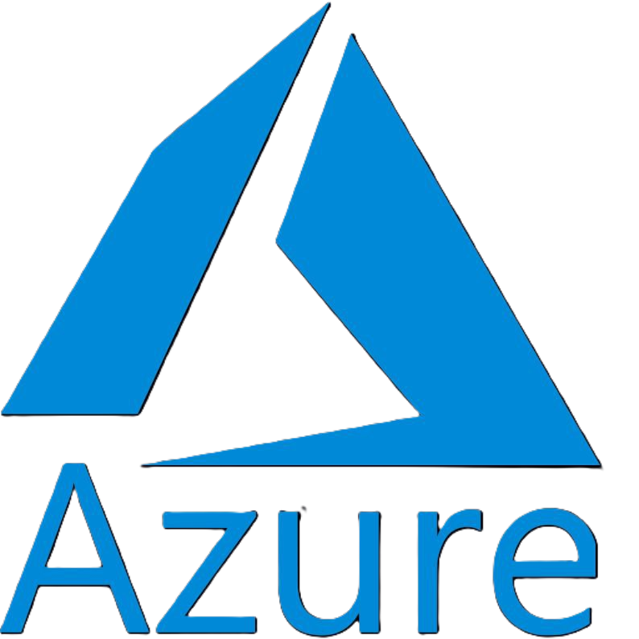

Multi-Cloud Python Web Application Deployment
CloudFusion
I developed CloudFusion Python App, a multi-cloud Python web application deployed across AWS and Azure. The infrastructure was provisioned.....
CloudFusion
I developed CloudFusion Python App, a multi-cloud Python web application deployed across AWS and Azure. The infrastructure was provisioned using Terraform for automated, scalable, and consistent setup. The application runs on Linux servers, ensuring stability and reliability.
A DevOps CI/CD pipeline automates code testing, building, and deployment, enabling rapid, repeatable, and error-free updates. The architecture also integrates multi-cloud monitoring, centralized logging, and automated updates, demonstrating best practices in cloud infrastructure management, DevOps automation, and cross-platform integration.
AWS
azure
GCP
Terraform
DevOps
Linux
Python
AWS-TERRAFORM
StaticSitePro
I developed StaticSitePro, a static website hosted on AWS S3 and accelerated with CloudFront CDN........
StaticSitePro
I developed StaticSitePro, a static website hosted on AWS S3 and accelerated with CloudFront CDN. Using Terraform, the entire infrastructure including hosting, versioning, and lifecycle policies was automated. This project demonstrates my ability to manage Infrastructure-as-Code (IaC) for scalable and repeatable deployments.
AWS S3
Terraform
GitHub
CloudFront
Lifecycle Policies

Linux-GitHub
CodeHubX
I deployed CodeHubX, a secure Git-based collaboration platform, on an AWS EC2 Linux instance.....
CodeHubX
I deployed CodeHubX, a secure Git-based collaboration platform, on an AWS EC2 Linux instance. The setup included SSH key-based authentication for secure access, automated repository backups using cron jobs with rsync/tar, and branching/merging workflows to streamline feature development and release management. This project highlights my ability to integrate Linux system administration with AWS cloud services for version control and collaboration.
AWS EC2 (Linux)
GitHub
SSH Key Authentication
Cron Jobs
rsync/tar

AZURE-DOCKER
DockServe
I containerized DockServe, a Python REST API, using Docker and deployed it on Azure Container Instances (ACI).....
DockServe
I containerized DockServe, a Python REST API, using Docker and deployed it on Azure Container Instances (ACI). With auto-scaling, health probes, and public/private networking, the service ensured reliability under production-level traffic. This project demonstrates my ability to deploy cloud-native containerized applications on Azure.
Azure Container Instances (ACI)
Docker
Azure CLI
Public/Private IP's
Auto-scaling
GCP-DEVOPS
AutoDeployX
I implemented AutoDeployX, a CI/CD pipeline powered by GCP Cloud Build......
AutoDeployX
I implemented AutoDeployX, a CI/CD pipeline powered by GCP Cloud Build. The pipeline automated unit testing, Docker image builds, pushing to Google Container Registry, and deployment to Cloud Run/GKE. This project highlights my skills in continuous integration, automated delivery, and DevOps on Google Cloud.
GCP Cloud Build
Google Container Registry (GCR)
Cloud Run
GitHub
pytest